Nintendo Adventure Books #6: Doors to Doom Guide
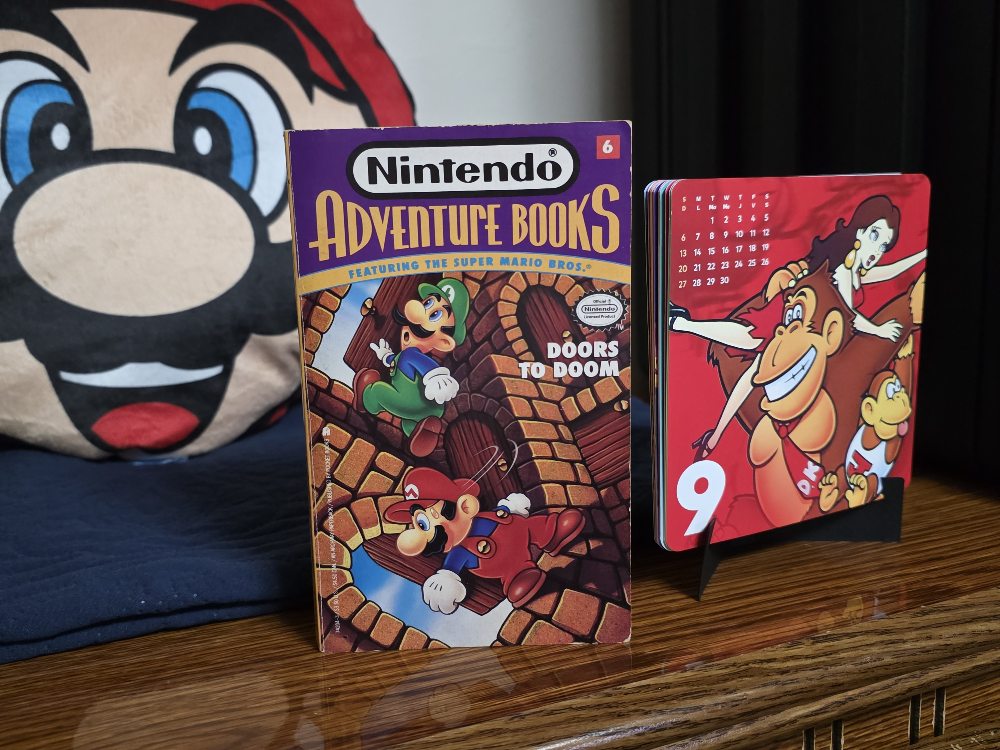
Intro: In this book written by Bill McCay, Mario and Luigi are at the mercy of Dr. Fungenstein and his mad yet nostalgic dream like worlds. Tremble from his complex puzzles! Are they up to the challenge? Are you? This is a tricky book that surprised me- in a good way! Read on. This is based on my physical copy of the book and adapted from a hand-written guide I wrote up around 2/20/20. Use the portal on this website to understand how to use this walk-through.
The guide was created by Amia J. Moore/ C. Mechayoshi. It may not be copied without permission. Images in this particular guide belong to me.
New: use side nav to jump around super quick. It is not meant to represent every page in the book. Images open to bigger photos.
Stats:
- Chapters: 59
- Items: Key, garage door opener, parasol
- Endings: fourteen
- Errors: Page 89’s puzzle image is swapped with page 98’s puzzle (actual pages of the errors page 91 and page 99). Partial errors, the win conditions automatically max the score sheet and you must count points more than once to meet the win conditions.
START Chapter 1, Page 1: Luigi wakes up abruptly to find Mario sleep walking again. The new pipe that has appeared in the plumber shop/abode in Brooklyn is anything but typical however. Luigi tries to stop him.
Splits: page 51
Path: -
Page 3, Chapter 2: They enter a jungle and under some coconut shells is a key with a puzzling ‘positively magic, use once then discard’ description. Just bail from the snap jaws coming!
Reward: fifteen points, key
Splits: page 106
Path: from page 63, page 71, page 96
Page 5, Chapter 3: They climb through fog and find a cage, normally for Paulina but this time Peach. Before reaching it DK shows up.
Reward: ten points
Splits: page 8
Path: from page 109, page 16
Page 7, Chapter 4: The vine is too short and Luigi slides back into his brother. Soon they’re Snapjaw lunch.
Game over
Path: from page 106
Page 8, Chapter 5: To reach DK they have to cross one of two catwalks across. They must find the shortest.
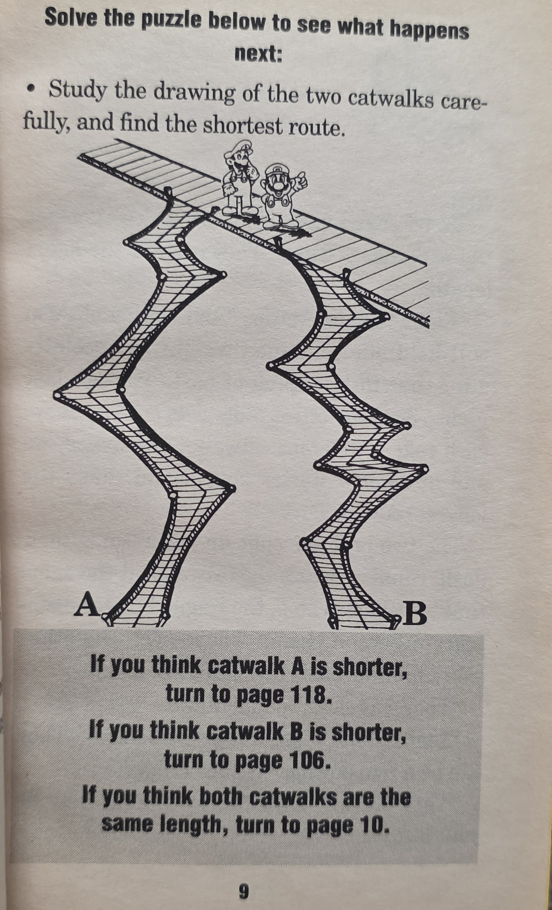
Puzzle: 1, ‘get a ruler’
Splits: page 118 (catwalk A is shorter), page 106 (catwalk B is shorter), page 10 (both catwalks same)
Path: from page 5
Puzzle solution: Usually straight edge puzzles are no brainers, but not this one due to complications. They’re the same, or at least the book says so. Go to ten to save Peach. One-hundred six will not kill but page one-hundred eighteen will.
Page 10, Chapter 6: They determine that they’re the same they should split up and not break them. They stride across safety until DK shows up. Cornered the brothers make a desperate move.
Splits: page 21 (jump through door), page 78 (fight Donkey Kong)
Path: from page 8
Puzzle solution: The door is to Subcon so instead go to seventy-eight.
Page 13, Chapter 7: They climb together making it up the scaffolding before stopping at a junction and maze. Who has the safest path? Use the puzzle.
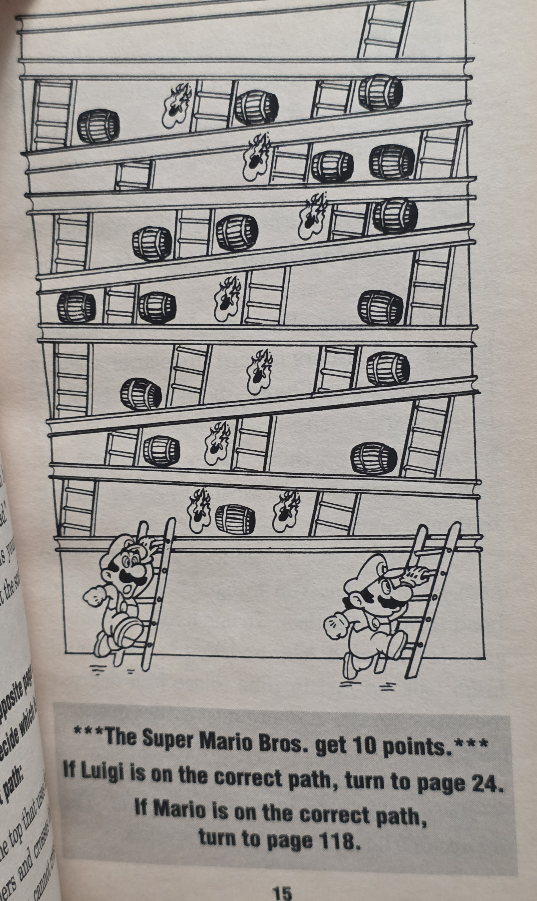
Puzzle: page 1, maze
Reward: ten points
Splits: page 24 (Luigi’s path), page 118 (Mario’s path)
Path: page 92
Puzzle solution: Does the right or left side cross the fewest barrels? You can’t cross the flames so it takes a bit to map, but it’s Luigi on page twenty-four to take.
Page 16, Chapter 8: They go for the umbrella. After getting it, Dr. F sprays ‘canned fog’ and they’re traveling blind. They find a door.
Reward: ten points, parasol
Splits: page 5 (keep going to the top), page 85 (go after Dr. Von F)
Path: from page 119
Page 18, Chapter 9: Mario bros roughly scramble through the door.
Reward: ten points
Splits: page 85
Path: from page 109
Page 19, Chapter 10: They rush through the door to get a thunderous applause in the hall of the Mushroom Palace. Their clothes have changed even and Peach awards them the ‘Order of the Golden Mushroom’ for how well they did. Party time. Yes, please celebrate in real life too for making it here. You deserve it.
Game over (Win)
Path: from page 115
Page 21, Chapter 11: The Mario bros are at a pond with bobbing barrels. Dr. Fungenstein mocks the heroes and then Beezos attack. Use the puzzle to get across. 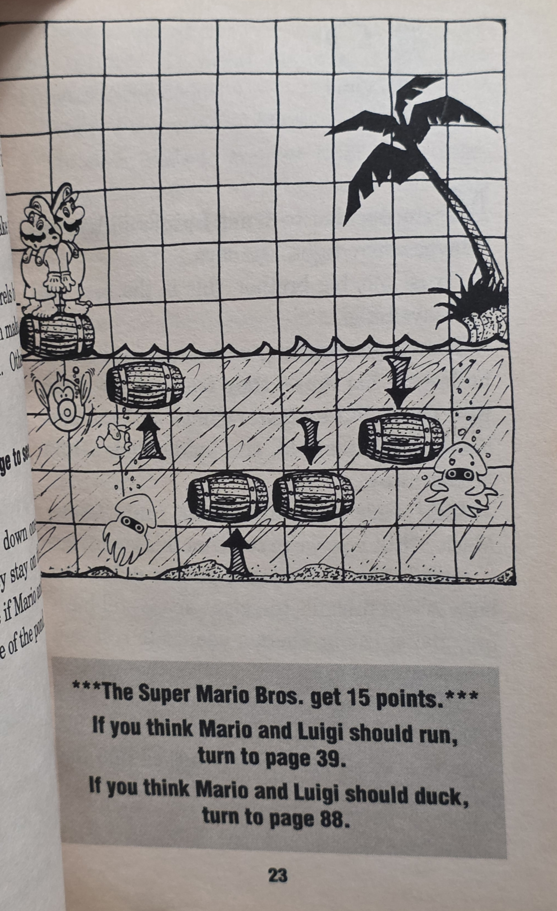
Reward: fifteen points
Puzzle: 1, logic
Splits: page 39 (Mario and Luigi run), page 88 (they duck instead)
Path: from page 89, page 10, page 74
Puzzle solution: The barrels move up and down on a timer, moving one space each second and sticking to the surface for two. They’re already in motion with arrows as indicators. Count out the motions and you’ll see that next one and so on will indeed be in the right spot as Mario moves across. Go to thirty-nine.
Page 24, Chapter 12: Mario takes Luigi’s route up. Soon they seem to be stuck but are they? They must choose between a trapdoor with a voice calling for help or take the elevator.
Splits: Page 36 (take the elevator), page 119 (take the trapdoor)
Path: from page 13
Puzzle solution: You can take both for now but the page one-hundred nineteen can lead to the parasol.
Page 26, Chapter 13: They try to reason but Wart attacks anyway. They get a lift on Wart’s skateboard to get the slip down the hall and eventually out of his clutches, ending before an enormous garage door.
Reward: fifteen points
Splits: page 114
Path: from page 94
Page 28, Chapter 14: They find a whole new Wart, a cool skateboard dude or something. He’ll trade a totally random garage door opener for one of the Mario brother’s hats. But who’s? Use the logic puzzle. No, literally it’s a logic puzzle.
Reward: fifteen points
Puzzle: 1, logic
Splits: page 69 (Mario’s head is bigger), page 94 (Luigi’s head is bigger)
Path: from page 56
Puzzle solution: You have clues to work with involving Mario, Luigi, Peach, and the Mushroom King as pictured (it’s just stock photos, not a real puzzle shown):
1: Everyone related has opposite traits. (So think of it as Mario bros vs Peach and her dad)
2: Luigi is tallest and Mario shortest. (Well that’s settled)
3: Either of them has the largest hat. (Again a given, since the answer will be either)
4: No one in the family of the one with the biggest head is the smartest, but the one with the biggest head is related to the loudest. (Neither Mario bro is smartest, but one of them is the loudest)
5: The one who eats the most is related to the smartest one and is the same sex as the quietest. (Where did eating come from? Anyway Peach being the only woman means we’re looking at the King, since only he can be same sex as the quietest, and the Mario bros have the loudest person and logically the most quiet.)
6: The smartest one is shorter than the loudest. (Okay so.. Luigi, the taller one, is loud now? Mario is related to him so..)
Embarrassingly, in older versions of this guide I was lost from being too literal minded with the ‘biggest head ≠ largest hat?’ clue, not knowing if the question was relative to the two pairs or the entire group of four, and/or mixing in ‘canon’ traits with what they strictly give us. Funnily neither option will lead to a hazard, but as we worked out above, it’s Mario. Go to page sixty-nine.
Page 32, Chapter 15: They find Bowser caged up. He’s just as baffled as they (and likely you) are as to what the heck is going on, and he begs to get out. If you have the green key you can do so. Besides that, DK Jr. is coming. What to do?
Splits: page 59 (you have the key), page 42 (no key)
Path: from page 61
Puzzle solution: Just do what you can. Beware that if you don’t you have the key, you can get in trouble if you also lack the parasol.
Page 34, Chapter 16: They free Bowser and he’s about as honest as you’d think, however he slips on a banana peel into DK Junior so that the two foes defeat each other. They move on.
Reward: ten points
Splits: page 45
Path: from page 59
Page 36, Chapter 17: The Marios dodge fireballs to reach elevators. Moving up they spot DK, also Peach in a cage. Move on.
Reward: fifteen points
Splits: page 82
Path: from page 24
Page 38, Chapter 18: They give the correct answer and the whole thing starts falling apart. They attempt to save Peach but a gorilla lands on them first.
Game over
Path: from page 44
Page 39, Chapter 19: The Mario bros carefully cross the barrels. They find a large jar (the kind that function as a pipe). They can hide inside or behind based on what the conveniently placed puzzle says!
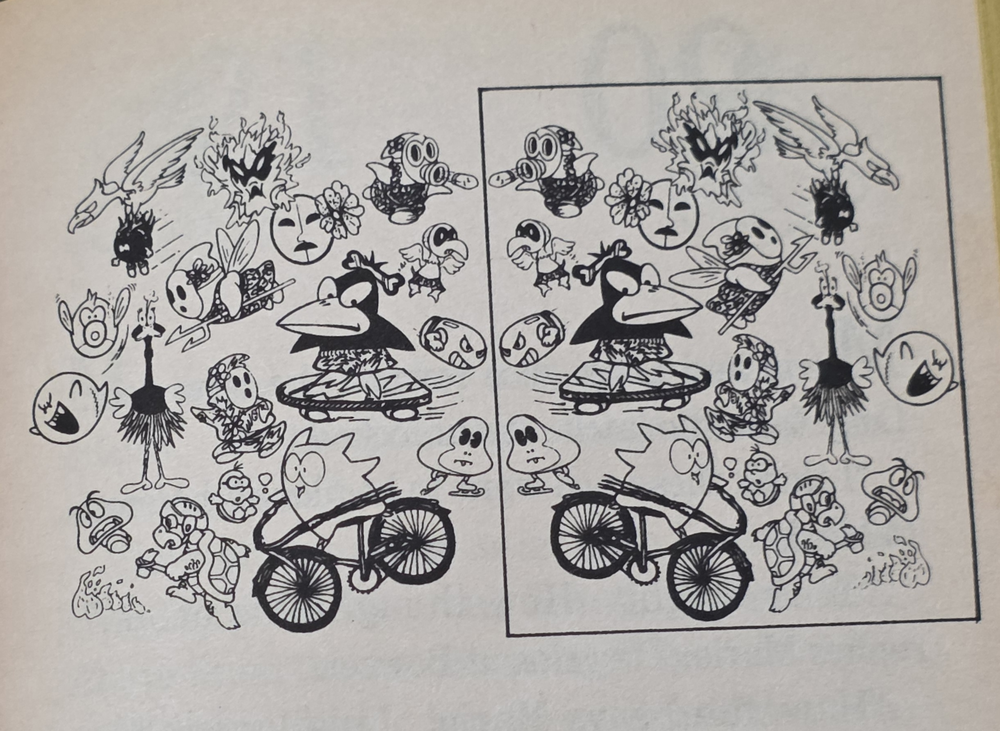
Reward: fifteen points
Puzzle: 1, spot the difference, just a hint
Splits: page 63 (hide behind the jar), page 71 (jump into the jar)
Path: from page 21
Puzzle solution: Okay so actually the puzzle doesn’t actually dictate your path. It’s ‘just for fun’. Anyway the Beezo is the out of place enemy in the mirror images. Both paths lead to more stuff and puzzles but page sixty-three is a useful junction point, especially if you are aware of this book’s ‘quirk’.
Page 42, Chapter 20: They cruelly leave Bowser to Donkey Kong… actually it’s about what’s deserved. Then they go through a door for the umpteenth time.
Reward: ten points
Splits: Page 85
Path: from page 32
Page 43, Chapter 21: Mario uses the key and they go to sunny fields and not Brooklyn.
Reward: fifteen points
Splits: page 85
Path: from page 59
Page 44, Chapter 20: Luigi figures it out, but feels it’s way too easy. (Showoff.) The doctor adds a bonus to his game, he’ll destroy the scaffolding with Donkey Kong, but also the princess. Tell the truth or lie?
Reward: fifteen points
Splits: page 38 (give the correct answer), page 109 (give incorrect answer)
Path: from page 82
Puzzle solution: Fib on page one-hundred nine.
Page 45, Chapter 23: The brothers climb a big ramp upwards with evidence of wheels skidding. Hmm. At the top is too passages guarded by Ninjis, the ‘Right and Wrong Brothers’. One lies and the other tells the truth. Solve which question to ask to get a straight answer out of them.
Puzzle: 1, logic
Splits: page 112 (question one: 'Which door would you choose if it were up to you?'), page 56 (question two: 'What would you say if I ask 'is this the correct door?'')
Path: page 48, page 34
Puzzle solution: I know this book didn’t come up with this riddle (Research ‘fork in the road’.) It’s question two on page fifty-six. I’m not sure if this book’s target audience age wise would get it without guessing, but basically posing as a hypothetical instead of asking outright, you get the truth from the truthful one and the liar lies about lying and you get the truth again- as Luigi spells out on the correct result page..
Page 48, Chapter 24: Boss bufonidae! -Or you'll meet him soon enough. They find a secret door to a dreaded tunnel. They can go in it now or jump in the jar.
Splits: page 45 (enter the passage), page 71 (jump into jar)
Path: from page 63
Puzzle solution: Luigi’s suggestion for the jar can lead to the key if needed on page seventy-one. Other wise the other one and yes, the labeling is appropriate.
Page 50, Chapter 25: They are attacked by a giant subwoofer and music. Should have brought ear protection!
Game over
Path: from page 56
Puzzle Solution: Fun fact: A bass guitar is described as 'squealing'. As a musician.. yeah unless this guy threw a Big Muff or Boss HM2 on it or something, the writer probably meant the electric guitar.
Page 51, Chapter 26: Luigi’s rescue attempt goes about as sour as old cheese. Mario awakes with a line like ‘did you get the number of that truck?’ implying something that was probably too interesting to be included here. Anyway, they’re in a dark room when a Goomba scientist, Dr. Sporis Von Fungenstein introduces himself and his dastardly plan to conquer the Mushroom Worlds with his famous ‘mushroom and turtle soup’. His Doors to Doom machine (title drop zomg. Never shown however) makes portals between worlds. He leaves them with a puzzle. 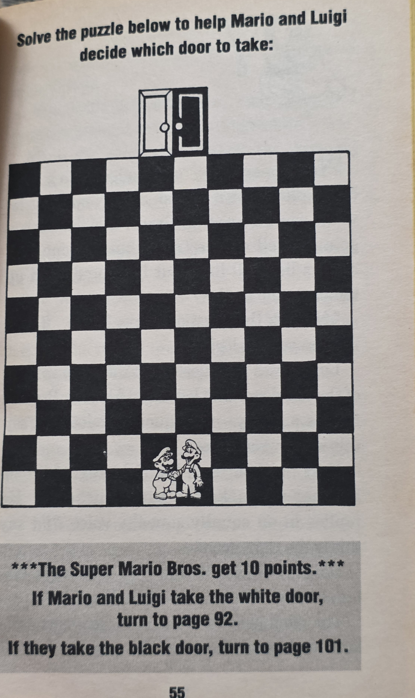
Reward: ten points
Splits: page 92 (take white door), page 101 (take black door)
Path: from page 1
Puzzle solution: Our first puzzle doesn’t play nice. Mario and Luigi must arrive at either the black or white door across the checker like board but they can only move two blocks up and one across or vise versa. Also they must reach the same door. Aim for the white door on ninety-two. Also as a future tip, keep up closely with your points!
Page 56, Chapter 27: They ask the right question because Luigi is smart and head through Wart’s cave. Something is a bit off.. dare I say radical? Rock n roll blasts before they reach two knobs. Take a chance as Luigi suggests.
Splits: page 50 (top doorknob), page 28 (turn bottom knob)
Path: from page 45
Puzzle solution: It is a guessing game which is rather uncharacteristic for this particular more intellectually focused book. (Other Nintendo Adventure Books on the other hand, it’s totally normal.) Use the bottom on page twenty-eight.
Page 59, Chapter 28: There’s an exit door to use the key on and also Bowser. It’s a single use key (they just don’t make em like they used to). Bowser becomes hysterical wanting to get out. What to do?
Reward: ten points
Splits: page 34 (free Bowser), page 43 (unlock the door)
Path: from page 32
Puzzle solution: Go on and free him on thirty-four. It’s funny and the book sort of expects you to (for more see the far bottom and optimal path). If you don’t however be sure to have the parasol.
Page 61, Chapter 29: They run from DK Jr and find hanging chains with locks and ‘chain chompers’ (not to be confused with Chain Chomps). Mario ponders about hitting a reset button when they enjoy their time. Alas, this book doesn’t give that option. Move on.
Reward: fifteen points
Split: page 32
Path: from page 66
Page 63, Chapter 30: Luigi’s afraid of Phantos because.. they want his body? I don’t remember than from any game but whatever. They avoid enemies then find a locked door that can lead three ways depending on your next action.
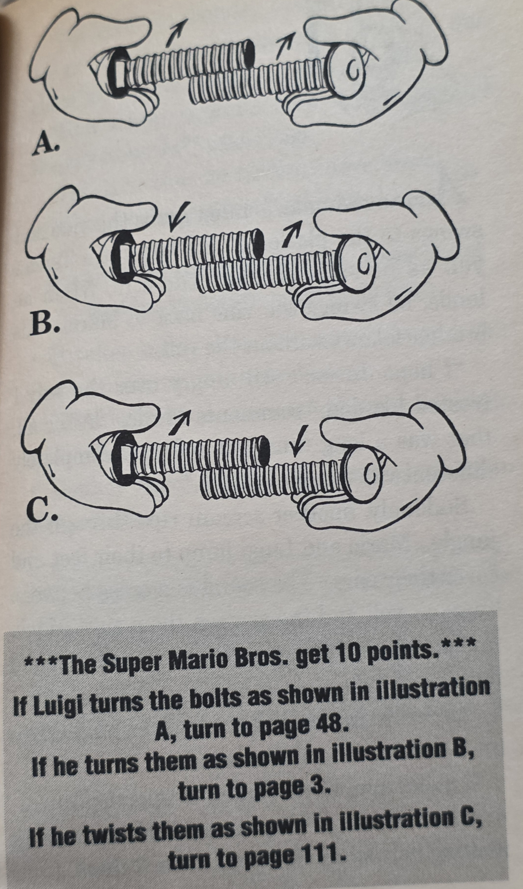
Puzzle: 1, logic
Splits: page 48 (illustration A), page 3 (illustration B), page 11 (illustration C)
Path: from page 39
Puzzle solution: Two bolts will move forward, backward, or nowhere depending on the threads. Option A, where the screws don’t move is ‘Boss Bufonidae’, page forty-eight. Option B pulls bolts apart for ‘Simian Morass’ on page three. They key can be gained there potentially. Option C is ‘Grand egress’. Avoid it and make sure you know what all these words mean since they just plainly spell it out.
Page 66, Chapter 31: They swing across the vine safely until DK Jr shows up. They can chuck coconuts at him or bail. Which to do? Do the math. (No images. Just do the math!)
Puzzle: 1, math
Reward: page fifteen points
Splits: page 84 (bonk DK Jr), page 61 (they can’t bonk him)
Path: page 106
Puzzle solution: It takes one-hundred to down Junior who can reach them in one-hundred seconds. The brothers throw five coconuts every ten seconds. Can they do it? No, you can only do fifty so head to page sixty-one.
Page 68, Chapter 32: They pick button B wrongly. An Autobomb fires point blank. Ouch.
Game over
Path: from page 89
Page 69, Chapter 33: Mario has to give up his hat so they receive the door opener and bail out of there. Out of the tunnel and back in Subcon is a huge garage door! How convenient.
Reward: fifteen points, garage door opener
Splits: page 114
Path: from page 28
Page 71, Chapter 34: They go into the jar and onto a chessboard suddenly. Play the official game of smart people everywhere to get out. The bothers make a bet based on if you can do it in seven moves.
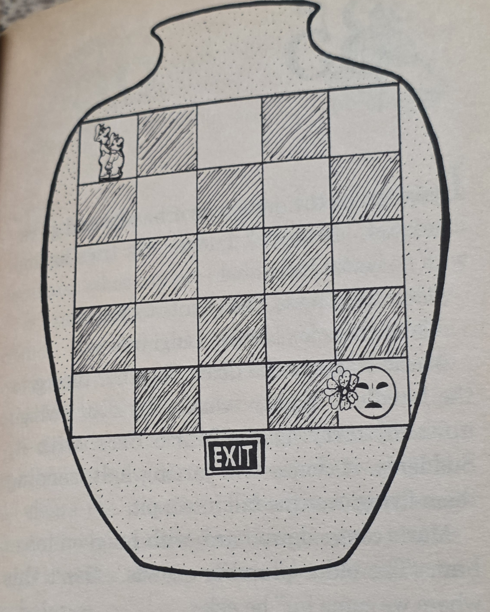
Puzzle: 1, logic
Splits: page 101 (do it in seven moves), page 3 (more than seven)
Path: from page 39, page 48
Puzzle solution: It’s a tight game of chase here with some rules I admit I wasn’t one-hundred percent on. When you move Phanto moves but not diagonally except they mention that he must get you diagonally (only?). Another ambiguous point, is the entire bottom of the board the exit or just the center spot? Take page three which you take if it requires more than seven moves. You’ll get the key. The other will lead back to Subcon.
Page 74, Chapter 35: They try to brute through the garage door and fail and then get flung away by said door. Umm, that was a bit extreme. Then they find a new door- or an old one...
Reward: ten points
Splits: page 21
Path: from page 114
Puzzle solution: A generous loop back if you know what’s up. See the optimal path if you missed Wart’s remote unintentionally or perhaps if you need more points. Remember, you can’t backtrack if you are past the garage door.
Page 75, Chapter 36: Luigi says they split and it starts off well enough until a bad jump form Mario results in both precariously dangling from a ladder. Its so embarrassing I guess, Dr. Fungenstein pops in to help them- with a puzzle.
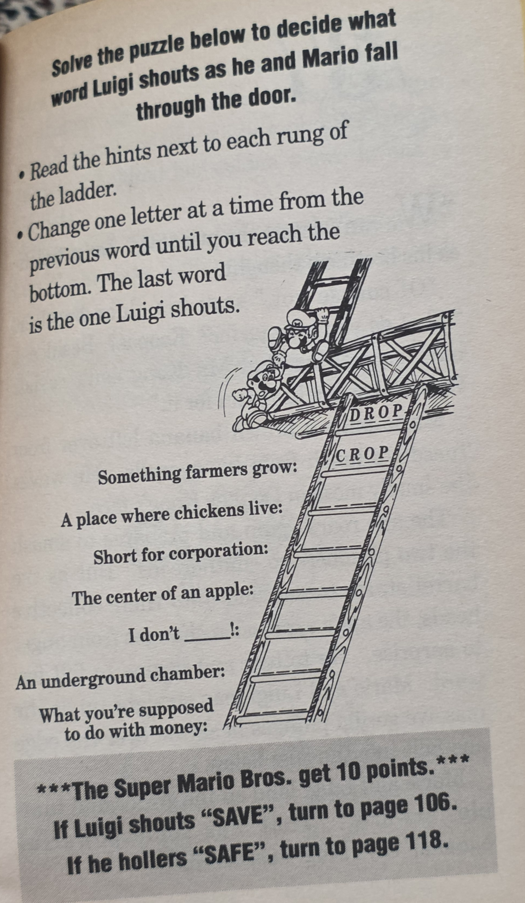
Reward: ten points
Splits: page 106 (SAVE), page 118 (SAFE)
Path: from page 92
Puzzle solution: A cute little thing where you take the given word above and change one letter at a time to fit the given hint. With only four letter words it’s simple, possibly the easiest in the book. Words: ‘coop’, ‘corp’, ‘core’, ‘care’, ‘cave’, ‘save’. Go to one-hundred six.
Page 78, Chapter 37: They have a plan. Mario attracts DK’s attention with the old brown banana trick. It works great and DK plunges over the edge and into the mist suddenly. Oh, actually it was Peach whacking the ape in the back of his head with her heavy crown… She’s mad too.
Splits: page 96
Path: from page 10
Page 80, Chapter 38: Luigi tries to feed Wart a vegetables that get spat back out. They run and get trapped between a hard place and a skateboard. Ouch!
Game over
Path: from page 94
Page 81, Chapter 39: They score so low they wake up in a class room with Pro. Fungenstein as the teacher. They have a lot of learn but not you, as you probably didn’t do anything wrong to get here. You just didn’t know this book’s ‘quirk’.
Game over
Path: from page 115
Page 82, Chapter 40: The elevator moves ‘relentlessly’ to the top. Hear that? It’s serious now, but Dr. F pops up in a door and can help them if you solve a puzzle. Get on that.
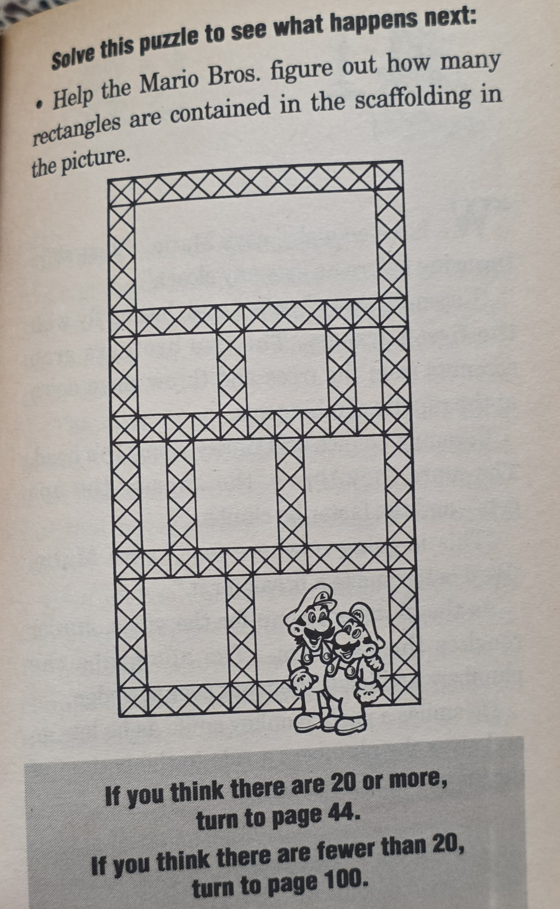
Splits: page 44 (twenty or more), page 100 (fewer than twenty)
Path: from page 36
Puzzle solution: You have an image of scaffolding. How may rectangles are contained? It's simple if you ignore that some of your 'rectangles' will feel more like squares. The correct number is supposedly twenty or more. Yes, math was totally my best subject, why do you ask? Go to forty-four.
Page 84, Chapter 41: The coconuts don’t put a dent in the junior king of the jungle. They’re caught and dropped to the bottom of the jungle- without a vine.
Game over
Path: from page 66
Page 85, Chapter 42: Subcon would be a nice place except for the constant enemy attacks. On cue action starts. Later the enemies are dressed a little odd for the occasion but still a threat. What to do?
Reward: twenty points
Splits: page 89 (use parasol), page 118 (no parasol)
Path: form page 101, page 42, page 43, page 18, page 96, page 16
Puzzle solution: Have the parasol or you’re doomed. Also this is a major loop back path.
Page 88, Chapter 43: While ducking from Beezos they become the fish food of the Trouter.
Game over
Path: from page 21
Page 89, Chapter 44: Luigi uses the parasol to save the day. They land and find a potion to throw, creating a door out. It’s locked however with a ‘lace lock’ a thing you’ve probably never seen before, especially since they’re showing the incorrect image!
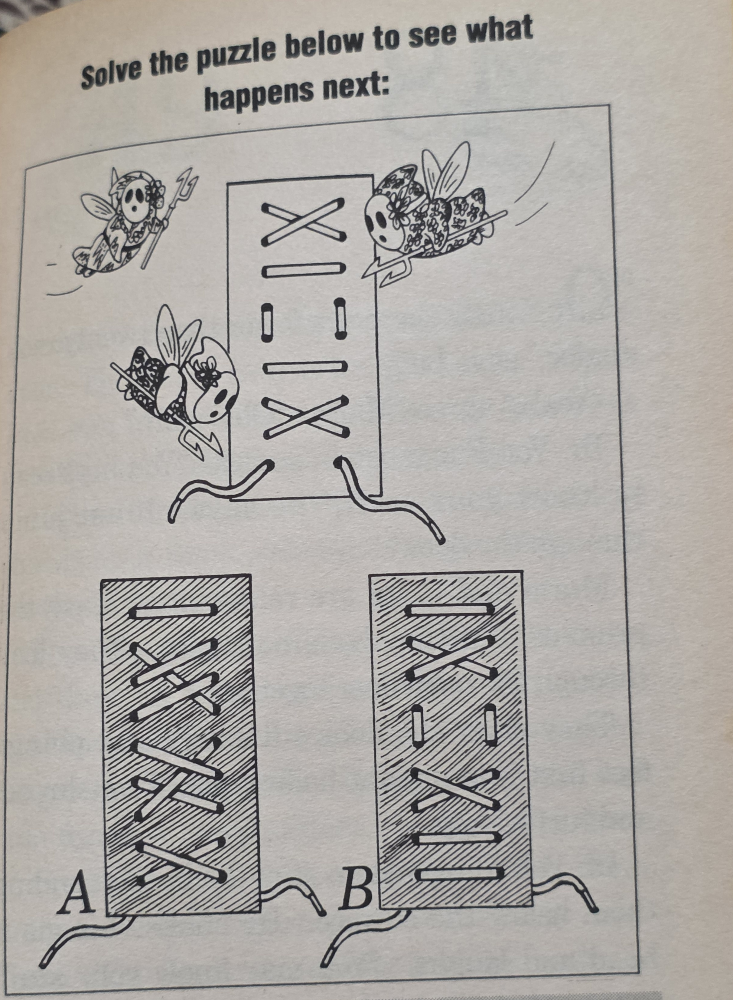
Reward: fifteen points
Error: image swapped with page 99
Splits: page 21 (press button A), page 68 (press button B)
Path: from page 85
Puzzle solution: Turn to page ninety-nine first. Good, now you see the odd little image. Does A or B match the top? It’s actually easier to eliminate the wrong option than to do the mental calculations that proves the correct one. Go for A on page twenty-one.
Page 92, Chapter 45: They walk into the familiar (for Mario) construction zone of Donkey Kong, complete with girders, ladders, barrels, oil on fire. Typical stuff at your local work zone! Should the brothers tackle the tower together or on their own?
Reward: twenty points
Splits: page 75 (they split up), page 13 (stay with his brother)
Path: from page 51
Puzzle solution: Stick together please, though both paths are safe at the moment. Thirteen will lead to an item you might want.
Page 94, Chapter 46: So Luigi closes his off screen analysis but Mario isn’t convinced. He’s sure that Luigi is smarter equaling a bigger head. The rock paper scissors gave forces Luigi to give it up. It’s a fail and the hat’s too small for Wart, ripping and they need to try something else.
Reward: ten points
Splits: page 80 (feed the toad), page 26 (reason with him)
Path: from page 28
Puzzle solution: Funny that in this continuity, Luigi is correct but Mario just doesn’t like his answer for some reason. Anyway reason with Wart on page twenty-six.
Page 96, Chapter 47: They talk. Peach got the same treatment as the brothers, a victim of crazy trap doors and parallel universes, typical stuff! Suddenly she’s taken away by a trap door. The brothers follow to no avail. There’s a cog puzzle that could help. Figure it out, after turning to page 89 where the puzzle actually is located of course.
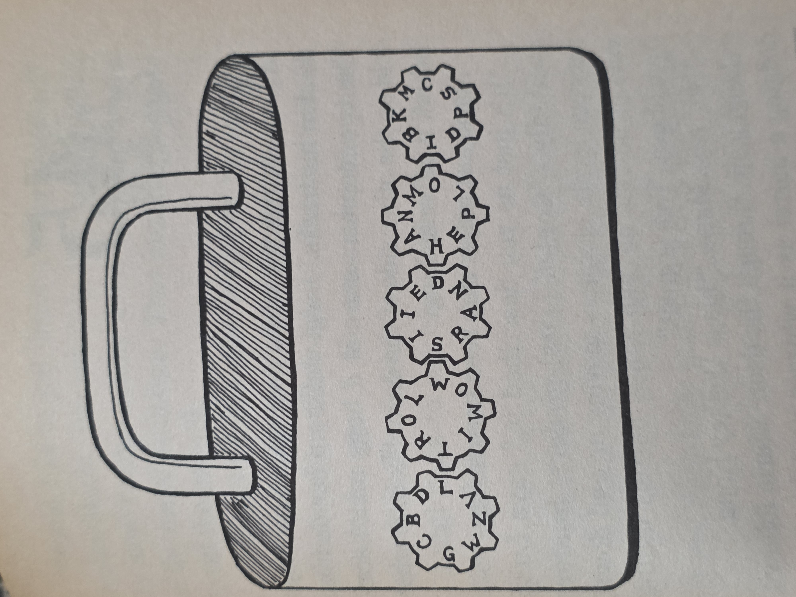
Splits: page 3 (cog on right), page 85 (cog on left)
Path: from page 78
Puzzle solution: Spin the cog puzzle left or right by one space. The book doesn’t specify that, but I assure you that’s all it takes, making this simple enough. Left spells out ‘Dream’ and right ‘Climb’. Aka Subcon on eighty-five and a DK situation that grants the key item on page three.
Page 100, Chapter 48: The Marios get the math wrong and jump through the door only to plunge into some mushroom and turtle soup.
Game over
Path: from page 82
Page 101, Chapter 49: The Mario bros take a free fall before landing in Subcon’s green cake shaped hills and Shy Guys on patrol. Keep moving.
Reward: fifteen points
Splits: page 85
Path: from page 51, page 71
Page 103, Chapter 50: Luigi finds himself home again at the start. The whole thing was a dream, or was it?
Game over
Path: from page 115
Page 104, Chapter 51: They use the remote. The door leads to a large laboratory with Dr. F waiting for them.
Reward: fifteen points
Splits: page 115
Path: from page 114
Page 106, Chapter 52: They fall onto the pile of banana peels. Vines all around, you know what game it is. Mario knows at the top of the level is a door to Brooklyn, Botanic Gardens. Anyway use the puzzle to pick the right one.
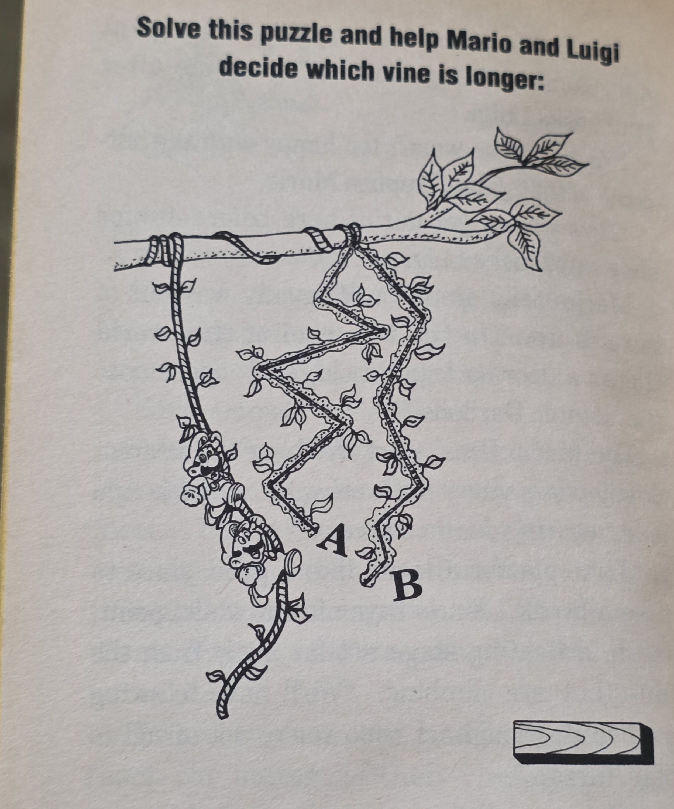
Reward: twenty points
Splits: page 66 (choose vine A), page 7 (vine B)
Path: from page 75, page 3, page 8
Puzzle solution: The ‘vine A’ is longer. You can kind of eyeball it so go to sixty-six. Or measure.
Page 109, Chapter 53: The Mario bros give the wrong answer and alarmingly Dr. Fungenstein sees through it. During his rage the bros use a bros move involving standing on the shoulders more than a decade before the RPG games and crack open the door. Now they have a few more options.
Reward: fifteen points
Splits: page 5 (swing to scaffold), page 18 (climb through doorway)
Path: from page 44
Puzzle solution: Swinging to the scaffold on five will lead to DK. The door to is to Subcon if you have you need to go there.
Page 111, Chapter 54: Grand egress! They open a door and whoosh! A Flyguy scorches them.
Game over
Path: from page 63
Page 112, Chapter 55: The Mario brothers get the same answer from both and instead of getting a chance to ask more both Ninjis open their doors. Next the Mario bros know, a skateboard trashes them. Radical!
Game over
Path: from page 45
Page 114, Chapter 56: A garage door is embedded in the hillside. Do you have the key?
Reward: twenty-five points
Splits: page 104 (use garage door opener), page 74 (no garage door opener)
Path: from page 69, page 26
Puzzle solution: Here’s a key location, or item check if you will. If you have the door remote, you are on the brink of the story’s end with a twist! Are you at at LEAST 360 points? If not take seventy-four and loop around until you do.
Page 115, Chapter 51: So the good old doctor, who is actually a professor, has a confession. He works for the princess and king and the entire thing was a test for the brothers from the Royal Academy of Mushroom Science. He’s been tallying your score and it’ll determine what’s next.
Reward: fifty points
Splits: page 81 (less than two-hundred), page 103 (between two-hundred ten and four-hundred), page 19 (more than four-hundred)
Path: from page 104
Puzzle solution: You need >400 to win and you get an extra fifty exactly here so you need 360 as stated above. You will likely NOT get this amount organically and you must retrace some pages before you are at this point. The only generous thing I can say for this book is that there are zero ‘buffets’ or penalties in the book and only one page where there isn’t a puzzle you can solve to keep you from game overs along the way..
Page 118, Chapter 58: Failing, the Marios end up back into a pit with the doctor and closing in walls.
Game over
Path: from page 85, page 75, page 13, page 8
Page 119, Chapter 59: Through the trapdoor they think they hear Peach calling for help. Going down strangely takes them to the top again so they’re about to continue when Luigi spots the umbrella. Go for it?
Reward: ten points
Splits: page 36 (take elevator), page 16 (try to retrieve parasol)
Path: from page 24
Puzzle solution: See optimal path. But in general having that parasol can save you so..
Summary and conclusions:
I liked the setup, the zany villain and our heroes being at his mercy directly and indirectly. The story’s swerve at the end was a bit eye-rolly, but if we’re going with an alternate universe portal hopping dream logic, I guess it works. Items are sparse, and the checks done well, with no item of doom. The locations weren’t my favorite, if only because I don’t love SMB2 or arcade Donkey Kong that much. The way the brothers interact with them is done well. While Mario and Luigi go at this adventure, this isn’t the strongest book for banter between them. It’s good enough though.
As stated in the intro, this was a surprising Nintendo Adventure Book and the only (of the Mario ones at least) designed exactly like this. Since creating these analysis pages years ago however, I've read more classic CYOA books and is familiar with what's expected. This isn't as bad as I used to think. The crafty puzzles are appropriate to the situation and settings, but they contain errors or vagueness to complicate matters. I wonder if the structure was too simple, so they increased the puzzle difficulty to make up for it. Either way, they compensated by raising the point threshold for the ‘good’ ending so high, one must loop around familiar pages in the book. My optimal path for this book was… an effort. At least it’s not difficult to navigate around the book. While a big loop, this is no Monster Mix-up territory. While I worked a little too hard for an anti-climatic payoff, I am oddly satisfied with this journey and its attempt to be a classic game book with little flare. Despite questionable mechanics, I’m giving a 4/5, a unique book in the series.
Optimal Path:
START 1- 51 (10pts) – 92 (20pts)- 13 (10pts) – 24 – 119 (10pts) – 16 (10pts, parasol)- 5 (10pts) – 8- 10- 21 (15pts) – 39 (15pts) – 63 (10pts) – 3 (15pts, key)- 106 (20pts) – 66 (15pts) - 61 (15pts)- 32 – 59 (10pts) – 43 (15pts, use key) – 85 (20pts) – 89 (15pts, use parasol) – 21 (15pts)- 39 (15pts) – 63 (10pts) – 3 (15pts, key)- 106- 66 (15pts)- 61 (15pts)- 32- 42 (10pts) – 59 (10pts)- 34 (10pts)- 45- 56- 28 (15pts)- 69 (15pts, door remote)- 114 (25pts)- 104 (15pts)- 115 (50pts) END
Notes: You score 470 in the end, “Award Winning Power Hero”. We grab the key but don’t free Bowser at first. We go to the junction you can only go on with the key on fifty-nine but we veer to forty-three and use it on the door. Notice that after we use our parasol we do our first loop back to the page with the barrel crossing puzzle, twenty-one. Yes, we will grab the key twice. The second time do so with Bowser. Theoretically you may be able to do something different here, by the way. Note that we do not rescue Peach. Though the book mentions it (see ‘book goals’) it awards nothing and veers us off.
Key Locations:
- Key: page 93
- Garage remote: page 69
- Parasol: page 16
Puzzle analysis: Fifteen puzzles. We have a whopping nine ‘logic’ puzzles. Two ‘get a ruler’, one logic/math, one maze, one math, one spot the difference. I’ve went into the puzzles before. They are formidable, the sort to really tempt you to write in your book. I get an evil genius is your bad guy here, but they got a little carried away.
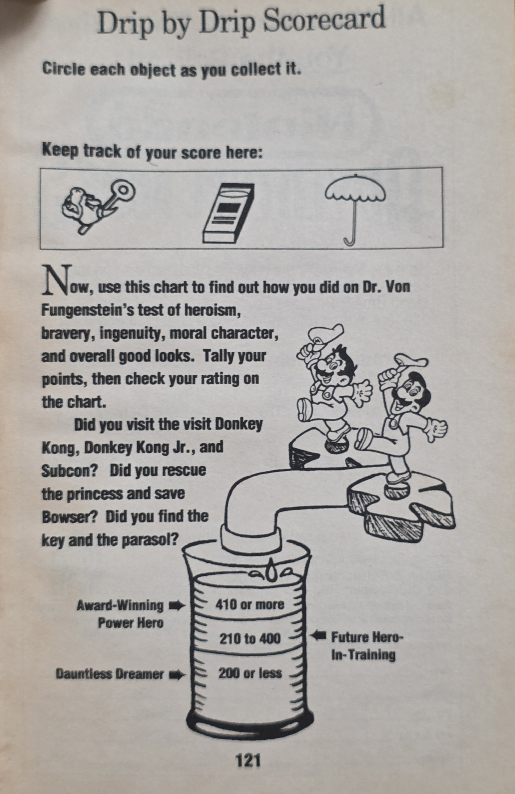
Book goals:
-Visit DK, DK Junior, and Subcon: These are pretty much mandatory by the time you reach the end, though I guess it depends on how much you engage these guys since there’s always a path with a door whisking you away.
-Rescuing Peach and Bowser: The key's only purpose is Bowser or the door in the same room as him, despite implications you might need to save it for something else. What they really mean is that since you will have to loop, you can’t use the key again unless you acquired it again. Rescuing Peach however is very easy to miss. It doesn’t really give you much more reward or plot, and its only on a single path.
-Find the key and parasol: Well the key thing we just mentioned. The parasol is and item check needed to keep you from dying, so yes obtain it. We’ve discussed how above.
Overall decently relevant hints in the back. Not the typical, but again this book had more than the usual effort in the writing so it makes sense.
Created: 2/21/20
Last edited: 2/23/20, 11/14/20, 11/17/21
Redone: 9/29/26